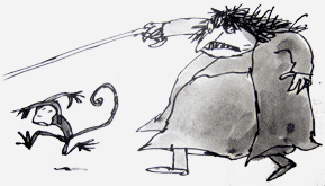
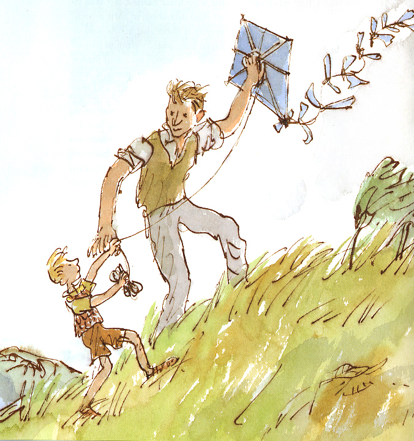
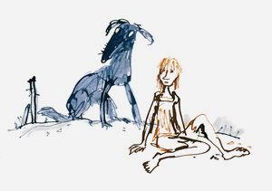
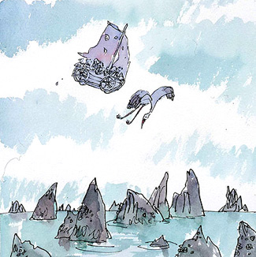
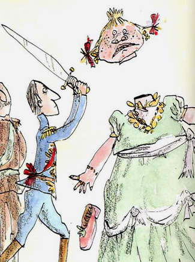
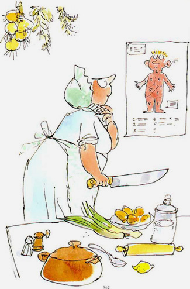
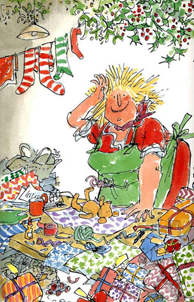
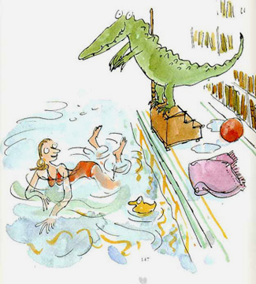
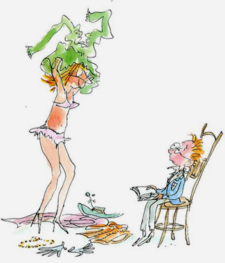
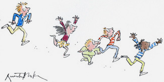

НАЧАЛО
Квентин Блейк
(раскланивается) Друзья и коллеги. Мне выпала честь вести для КАК колонку про иллюстрацию.
Сразу скажу, дело это представляется мне весьма и весьма непростым, поэтому прошу вас по возможности слать мне жалобы и предложения, а также, если вдруг у кого есть, вопросы. Высказаться насчет состояния российской иллюстрации мне уже приходилось, и к этой теме я возвращаться не буду, а займусь материями сугубо практическими.
Но сперва хотелось бы всем напомнить, а то вдруг кто и не знает, что в библиотеке иностранной литературы (напротив кинотеатра Иллюзион) висит до сих пор и провисит до ноября выставка английских иллюстраторов во главе с Квентином Блейком — одним из пяти примерно зарубежных иллюстраторов, к кому без натяжки можно приставить слово «великий» (об остальных в свой срок). То есть буквально, кроме всех возможных премий и регалий, в Англии есть школа имени Блейка, притом, что тот совершенно жив и дай бог здоровья.

С пятидесятых Блейк перерисовал великое множество всего, но важнейший, так сказать, период его творчества — это многолетнее сотрудничество, а вернее, соавторство, с Роальдом Далем, который известен у нас как автор страшненьких рассказов для взрослых, а как детский писатель неизвестен совсем. Даже по выходе на экраны «Шоколадной Фабрики», «Гигантского Персика» и «Ведьм» С Анжеликой Хьюстон — может быть, именно потому, что авторы этих кинофильмов пренебрегли каноническими Блейковскими образами. Самое разумное было бы взять его рисунки и непосредственно заанимировать. Другое дело, где найти того аниматора (ждем, впрочем, Вес-Андерсоновского Мистера Фокса и надеемся). Мастерство Блейка, легкость, точность, движение, волшебство, наконец, отдельных слов не требуют, смотрите сами и по возможности учитесь. Остановлюсь только на одном, вопиющем, примере иллюстраторской — эээ — утонченности, что ли. К вопросу о том, стоит ли иллюстрировать книги вообще, навязывая читателю образы, которые стоило бы додумать самому. В одном из рассказов Роальда Даля некий мальчик довольно подробно описывает, как улыбается его отец — одними глазами. Казалось бы, бери и рисуй, но, поскольку эта улыбка играет в истории ключевую роль, Блейк уступает место рассказчику и не рисует глаз вообще:




К сказке про Золушку, кажется (Даль был любитель переписывать Шарля Перро)



И еще один очаровательный бонус для тех, кто понимает по-иностранному, от Блейка и Даля:
A woman who my mother knows Came in and took off all her clothes Said i, not being very old: «By golly gosh, you must be cold!» Said she: «Oh no, indeed i`m not! «Instead, i`m devilishly hot!»

короче, все бегом:
